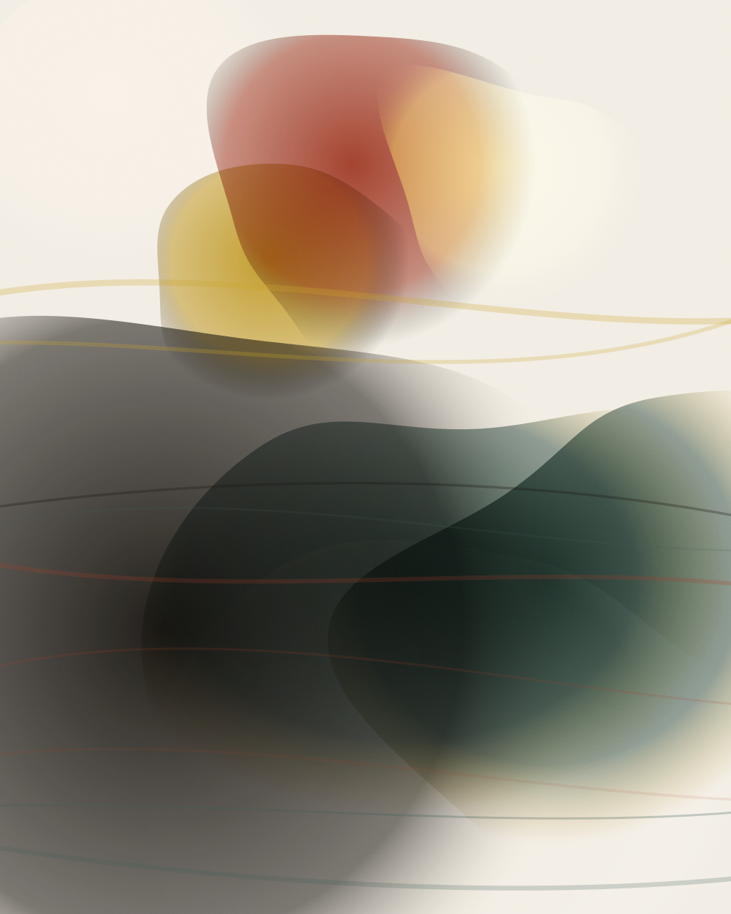

Toronto · Est. 2014
Ink, oil,
and the stories
in between.
Sam Wolff draws quiet people in loud weather. Twelve years of brush-and-ink pages, oil studies and small-run comics, made one careful line at a time in a third-floor studio on Dundas Street.

Oil on linen
Selected work
All work →


“A drawing is a decision you can still see afterwards.”
Sam Wolff, studio notes
The practice
About the studio →01
Drawings
Brush, dip pen and compressed charcoal on cotton rag. Life studies and imagined interiors, usually worked wet and finished in a single sitting so the first decision stays visible.
02
Comics
Long-form and short. Three self-published books to date, plus pages for anthologies. Everything is lettered by hand and printed in runs small enough to sign.
03
Painting & print
Oil and cold wax on linen and panel, alongside two- and three-colour risograph editions pulled at a co-operative press in the east end.